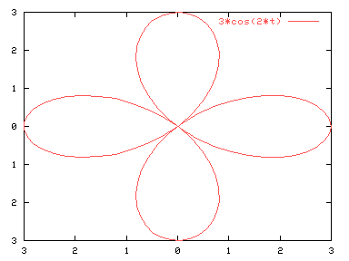

Para representar funciones en coordenadas polares tenemos que activar la opción:
set polar
Y para volver a un sistema de coordenadas cartesianas:
set nopolar
En coordenadas polares la variable t se refiere al ángulo. Se dispone de la opción "set trange [t1:t2]" para indicar el intervalo en el que queremos que se represente nuestra figura. Por defecto se hará entre 0 y 2*pi. El gráfico se representa en un área rectangular; las opciones "set xrange" y "set yrange" modificarán tanto la altura como la anchura. Por ejemplo:
set polar
plot 3*cos(2*x)

Para modificar el área de representación, para que haya más espacio entorno a la figura:
set xrange [-4:4]
set yrange [-3.5:3.5]
replot
Por defecto gnuplot interpretará todos los ángulos en radianes. Para cambiar este comportamiento se pueden usar las siguientes expresiones:
set angles degrees
set angles radians
El equivalente a coordenadas polares para 3D son coordenadas esféricas y cilíndricas, pero gnuplot sólo permite utilizarlas cuando se representan ficheros de datos. Para más información véase "help set mapping" o Sección 7.1 en el presente manual.